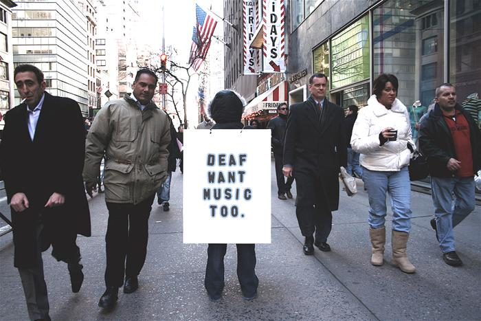
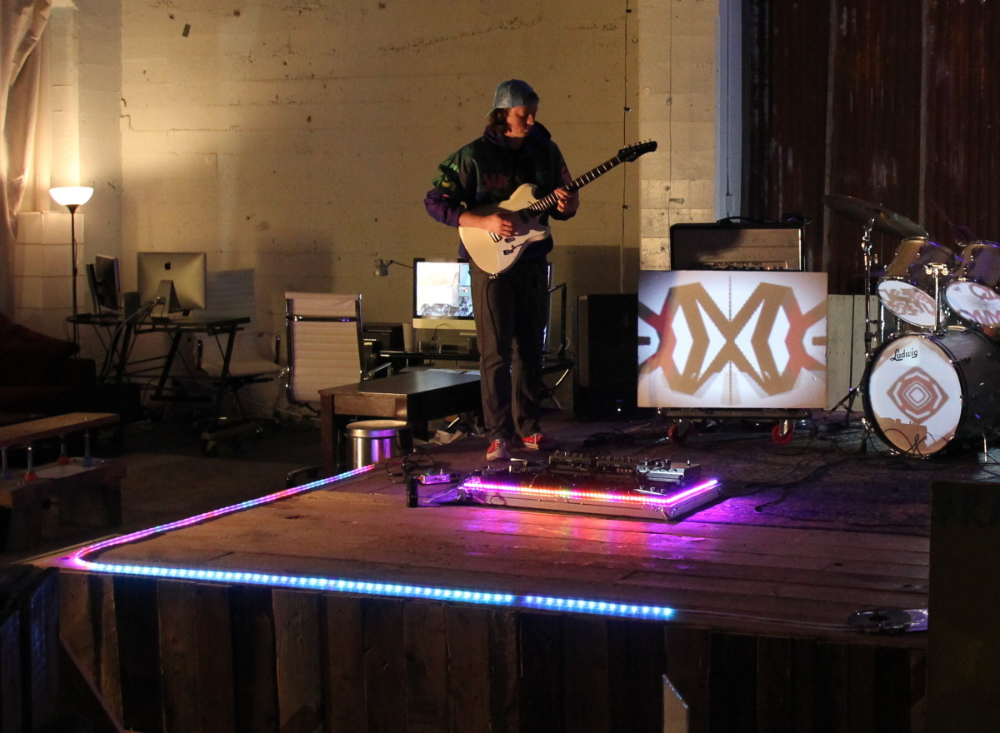

At CymaSpace, we are working to make performing arts more accessible and inclusive to the Deaf & Hard-of-Hearing. The team behind our innovative Technology Program are proud to announce our newest development:
Cymatic Lighting – A Modern “Visual Sound” System for Deaf & Hard-of-Hearing
An open source Cymatic Lighting system that allows the Deaf & Hard-of-Hearing to see music & alerts using the Arduino hardware platform & digital individually addressable LEDs. Source code and information on how to purchase or rent the system can be found at the bottom of this page.
1 in 8 Americans & 360 million people globally live in partial or complete silence due to hearing loss. Cultural events (performing arts & social gatherings) are a powerful way to bring communities together; however the Deaf & Hard-of-Hearing (DHH) are often excluded their benefits. When such events rely on sound to deliver their experience or message, organizations & artists often overlook equal access as they lack resources or awareness to ensure their event activities are accessible to those who cannot hear.

To address this need, CymaSpace serves the community providing advocacy for DHH patrons as well as access to ASL interpreters, accessible technologies and Deaf awareness training to art organizations, venues, festivals and individual artists.
Through the CymaSpace Technology Program, we are developing hardware & software solutions to intelligently translate audio into light & vibration, sound can be seen & felt not just heard. When applied to performing arts; DHH & hearing audiences respond positively, reporting new appreciation for art mediums previously thought inaccessible. Many state the developments encourage them to attend events & socialize more. DHH artists could follow rhythms & perform alongside hearing peers. Others express a desire to use the technology at home for their entertainment system or even alert/safety systems.

The Cymatic Lighting System represents a significant first step in providing equal access to sound & music during performing arts & social events. Our affordable to purchase, rent or easy-to-build, open-source sound-reactive LED lighting system can be used in a variety of applications such as creating a visually compelling lighting addition to performance stages or integrated into architecture and even furniture. Incorporating Cymatic Lighting into your events has been shown to increase attendance by the Deaf & Hard-of-Hearing community and is a great way to improve equal access.
If you are interested in incorporating Cymatic Lighting into your own venue, event or artistic practice there currently several options available:
Cymatic Lighting System Rental
The system can be rented from CymaSpace and temporarily installed at your event. Please Contact Us directly for rental inquiries.
Purchase a System through Audiolux Devices
Audiolux Devices (audioluxdevices.com), offer the system, built to order in a rugged, easy-to-use and compact kit that can be purchased and even customized to fit your unique needs.
Build your own
The source-code and basic getting started instructions on how to build your own Cymatic Lighting System have been released over on our Github page (github.com/CymaSpace/Cymatic-Lighting)